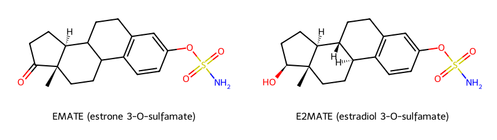
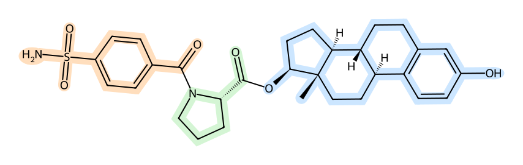
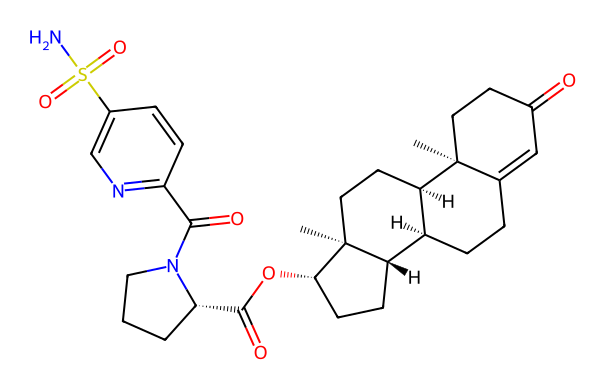
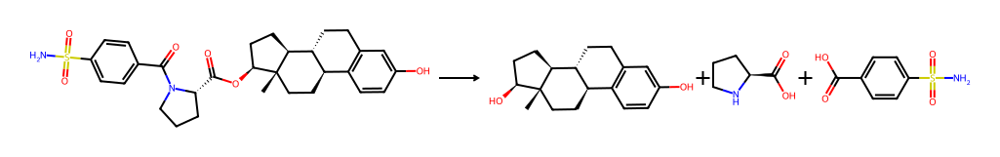
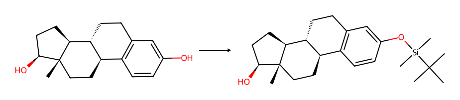
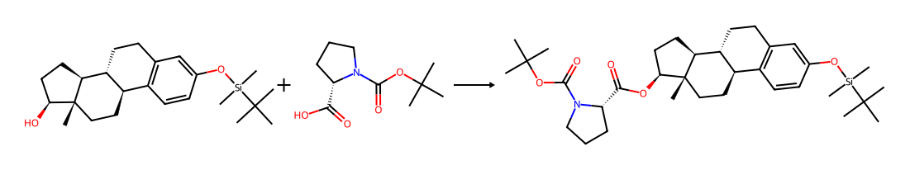
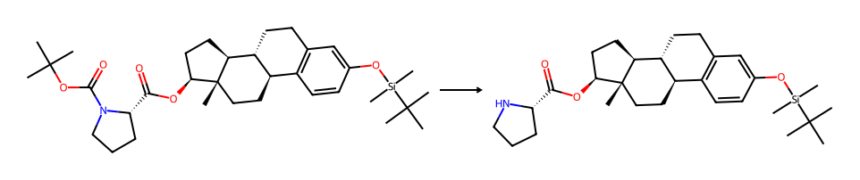
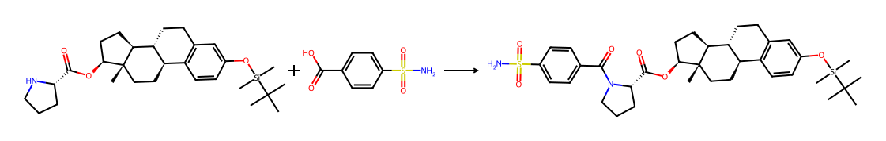
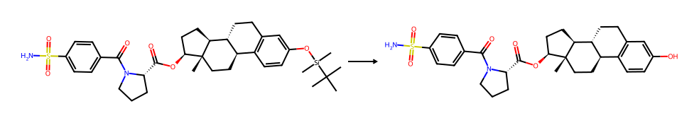
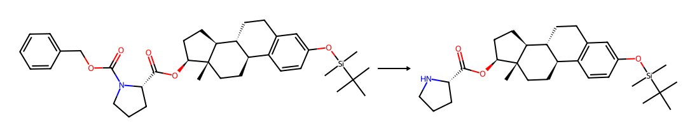

EC508 (estradiol 17β-{1-[(4-sulfamoyl)benzoyl]-L-prolinate}) is an orally bioavailable estradiol prodrug developed by Evestra, Inc. and reported by Ahmed et al. (2017) in 2017. Its design exploits reversible binding of the para-sulfamoylbenzoyl moiety to carbonic anhydrase II (CAII) within erythrocytes, sequestering the prodrug during portal transit and thereby bypassing first-pass hepatic metabolism. In ovariectomized rats, oral EC508 displays approximately 100-fold greater estrogenic potency than oral 17β-estradiol and 10-fold greater potency than ethinylestradiol, while producing no measurable effect on plasma HDL-cholesterol or angiotensinogen concentrations at active doses.
To date, EC508 has been synthesized and characterized only by its developer; no independent reproduction has been reported. This paper describes a proposed five-step synthetic route to EC508 starting from 17β-estradiol via a 3-O-tert-butyldimethylsilyl protection, EDCI/DMAP-mediated Steglich esterification with N-Boc-L-proline, trifluoroacetic acid–mediated Boc deprotection, amide coupling with 4-sulfamoylbenzoic acid using DIC/HOBt/DIEA, and final p-toluenesulfonic acid–mediated removal of the silyl ether. This route is adapted from the published synthesis (Ahmed et al., 2017, “Method B”); the carboxybenzyl-protected variant (“Method A”), which avoids potential proline epimerization but requires catalytic hydrogenation, is described as a literature-validated alternative.
A complete characterization protocol is specified using 1H NMR, 13C NMR, HMBC, IR, HRMS, optical rotation, and HPLC purity analysis, with explicit acceptance criteria derived from the published data. Limitations regarding the absence of independent human pharmacokinetic data, the saturable nature of the CAII-mediated bypass mechanism, and the regulatory status of EC508 are discussed. This work is offered as a pre-registered protocol to support open-science reproduction of a pharmacologically interesting prodrug; no biological evaluation in humans is proposed.
This document is a pre-registration. Its purpose is to specify the protocol and acceptance criteria before any experimental work is undertaken, to constrain post-hoc rationalization, and to support reproducibility in a domain (independent and citizen-science medicinal chemistry) where pre-registration norms have been less developed than in adjacent fields. A subsequent results paper will report observed yields, characterization data, and any deviations from this protocol with full disclosure.
Oral administration of 17β-estradiol (E2) is the most convenient route for hormone replacement and contraception, but is pharmacokinetically compromised by extensive first-pass metabolism. Oral bioavailability of unmodified E2 is approximately 5%, with high inter-individual variability, and intracellular hepatic concentrations of E2 are estimated to be 4–5 times those in the systemic circulation due to portal vein delivery (Ahmed et al., 2017; Kuhl, 2005). The resulting disproportionate hepatic exposure drives well-characterized adverse effects on liver-derived proteins: induction of angiotensinogen, sex hormone–binding globulin (SHBG), and clotting factors, alongside suppression of HDL-cholesterol and modulation of the GH/IGF-1 axis. These effects are amplified with ethinylestradiol (EE), whose 17α-ethinyl group confers metabolic stability but increases the hepatic estrogenic load and is a recognized contributor to the venous thromboembolism (VTE) risk profile of combined oral contraceptives (Stanczyk et al., 2013).
Parenteral routes like transdermal patches, vaginal preparations, and intramuscular injections of estradiol esters such as estradiol valerate, cypionate, or enanthate largely avoid first-pass effects and produce more favorable hepatic safety profiles, but at the cost of patient convenience, compliance, and (for injectables) the practical and psychological burden of self-injection. A drug that combined the convenience of oral administration with the hepatic-sparing pharmacokinetic profile of parenteral E2 would be a meaningful advance in hormone therapy and the development of an easier synthesis method would allow for the creation of an estradiol that is the best of both worlds, avoiding first-pass and not requiring self-injection.
The conceptual foundation of EC508 was laid by work in the mid-1990s by Elger and colleagues at Jenapharm/Schering, who observed that aryl sulfamate esters of estrogens, exemplified by estrone-3-O-sulfamate (EMATE) and estradiol-3-O-sulfamate (E2MATE, also known as PGL2001 or J995), exhibited unusually high oral systemic estrogenic potency without proportionate hepatic effects (Elger et al., 1995, 1998). The mechanistic basis was subsequently established as reversible high-affinity binding of the unsubstituted aryl sulfamate (–OSO2NH2) moiety to carbonic anhydrase II (CAII), an abundant zinc metalloenzyme present at millimolar concentrations within erythrocytes. Sulfamate-bearing prodrugs absorbed from the gut and entering the hepatic portal vein partition rapidly into red blood cells via CAII binding, sequestering them from hepatic uptake and metabolism during portal transit. Slow release from erythrocytes into the systemic circulation, followed by hydrolysis by plasma and tissue esterases (in the case of ester prodrugs) or by steroid sulfatase (STS, in the case of sulfamate prodrugs), then liberates the active hormone (Elger et al., 2001; Williams, 2013).

Figure 1: The aryl sulfamate CAII-binding pharmacophore in the first-generation prodrugs EMATE (estrone 3-O-sulfamate) and E2MATE (estradiol 3-O-sulfamate). The unsubstituted sulfamate ester (–OSO2NH2) at the steroid 3-position is the moiety that binds carbonic anhydrase II. Because hydrolysis of the 3-O-sulfamate to the free estrogen depends on steroid sulfatase, and because these compounds are themselves potent STS inhibitors, they suppress the very enzyme required to release the active hormone — the self-cleavage liability that EC508 was designed to circumvent.E2MATE itself, however, did not advance as an estrogen prodrug. As a sulfamate ester at the 3-position, its hydrolysis to E2 in vivo depends on STS, and E2MATE proved to be a potent irreversible inhibitor of STS (Howarth et al., 1994). In humans, sustained STS inhibition was associated with insufficient estrogenic exposure for hormone replacement use, and clinical development for that indication was halted (Pohl et al., 2014). E2MATE has since been redirected toward endometriosis, where local STS inhibition rather than estrogen delivery is the therapeutic objective; a Phase I proof-of-principle study in healthy women of reproductive age (Pohl et al., 2014) demonstrated 91–96% inhibition of endometrial STS activity following four weekly oral doses of 4 mg, with synergistic effects observed in combination with norethindrone acetate. The redirection of E2MATE thus left open the original problem, an oral estrogen with non-hepatic pharmacokinetic behavior which Ahmed et al. (2017) addressed with a modified design.
The Evestra group reasoned that decoupling the CAII-binding pharmacophore from the parent steroid would allow the prodrug to retain erythrocyte sequestration while avoiding the STS-inhibitory and self-cleavage liabilities of sulfamate prodrugs. Their solution was to install the unsubstituted sulfamate group on a separate aryl handle–4-sulfamoylbenzoyl—linked via an amide bond to the nitrogen of an amino acid, whose carboxylic acid in turn forms an ester with the 17β-hydroxyl of estradiol. The amino acid linker thus performs three functions: it provides the cleavable ester bond (hydrolyzed by plasma esterases to liberate E2), it spatially separates the steroid from the CAII-binding group, and through choice of side chain it modulates esterase susceptibility and pharmacokinetics. Across a 17-member SAR series with varied amino acids (glycine, alanine, gem-dimethylglycine, valine, phenylalanine, N-methylalanine, L-proline) and varied sulfonamide-bearing acyl groups (4-sulfamoylbenzoyl, 3-sulfamoylbenzoyl, sulfamoylphenyl-acetyl, sulfamoylfuranoyl, sulfamoylpyridyl, biaryl analogs), the L-proline analog with the 4-sulfamoylbenzoyl group designated EC508 (compound 7g in the original numbering)—emerged as the most active oral estrogen by uterotrophic assay (Ahmed et al., 2017).

Figure 2: EC508 (C30H36N2O6S, MW 552.69 g/mol) decomposed into its three functional modules: the estradiol steroid (blue), released as the active hormone on ester hydrolysis; the L-proline linker (green), which supplies the esterase-cleavable ester bond and holds the steroid at a distance from the CAII-binding group; and the 4-sulfamoylbenzoyl group (orange), whose unsubstituted aryl sulfonamide is the carbonic anhydrase II pharmacophore. Relocating the sulfonamide from the steroid itself (as in E2MATE, Figure 1) onto a separate aryl handle is the design change that lets the prodrug retain erythrocyte sequestration while shedding the STS-inhibitory and self-cleavage liabilities.In the reported preclinical data we see ovariectomized Wistar rats dosed orally for three days, EC508 produced uterine weight increases at 1 µg/animal/day (244% of vehicle control) that were not achieved by E2 even at 1000 µg/animal/day (the highest tested dose), corresponding to a ~100-fold potency advantage over E2 and ~10-fold over EE. At doses producing maximal uterine effects, EC508 had no measurable effect on plasma HDL-cholesterol or angiotensinogen levels, in stark contrast to E2 and EE which showed dose-dependent suppression of HDL and elevation of angiotensinogen consistent with hepatic estrogen exposure. Pharmacokinetic studies in male Sprague-Dawley rats dosed at 1.0 mg/kg IV and 5.0 mg/kg PO yielded an oral bioavailability of 102% (plasma) and 122% (whole blood), with a 20-fold higher whole blood-to-plasma ratio consistent with erythrocyte sequestration. Plasma half-life was 4.58 h and whole blood half-life 4.90 h. EC508 itself bound the human estrogen receptor with EC50 = 432 nM, compared to 2.3 nM for E2—a 188-fold difference confirming that biological activity derives from hydrolytic release of E2, not from intrinsic prodrug activity. CAII binding affinity was IC50 = 110 nM, within the moderate range (50–500 nM), I hypothesize this would balance erythrocyte retention against eventual systemic release.
Despite the encouraging preclinical profile, EC508 has had a quiet clinical history. Evestra announced an intention to file for Investigational New Drug status with the U.S. Food and Drug Administration in the second quarter of 2018 (Ahmed et al., 2017). To my knowledge, no clinical trial registry entry, peer-reviewed publication, or press release has subsequently disclosed Phase I data. Evestra’s pipeline page no longer lists EC508 as of the most recent available archive snapshots. The reasons for this stall are unknown from public sources and may reflect any combination of toxicology findings, formulation difficulties, financing, intellectual property considerations, or strategic redirection. The compound in its androgenic form (EC586) has however been assigned a Unique Ingredient Identifier (UNII: C86SA44JFY) in the FDA Global Substance Registration System (US Food and Drug Administration, 2026).
A closely related testosterone analog, EC586 (testosterone 17β-{1-[5-(aminosulfonyl)pyridin-2-ylcarbonyl]-L-prolinate}), has been described by the same group as an oral testosterone prodrug exhibiting the same CAII-mediated bypass mechanism (Ahmed et al., 2017). EC586 reportedly produces a 132-fold increase in testosterone area-under-the-curve compared to testosterone propionate at equivalent oral doses in male rats. The existence of EC586 demonstrates that the sulfonamide-proline scaffold generalizes across steroidal substrates, supporting the broader importance of the chemistry described here.

Figure 3: EC586 (C30H39N3O6S), the testosterone congener of EC508. The estradiol steroid is replaced by testosterone and the 4-sulfamoylbenzoyl group by a 5-(aminosulfonyl)pyridine-2-carbonyl group, but the L-proline linker and the ester/amide connectivity are identical. The same three-module logic (steroid / cleavable proline linker / aryl sulfonamide) is preserved, which is why the CAII-bypass pharmacokinetics transfer from the estrogen to the androgen.In this context, an independent synthesis of EC508 serves several purposes. It provides external validation of the published chemistry, which has been reported only once. It produces material for any future independent biological characterization. It contributes to an open scientific record on a compound of pharmacological interest whose private development trajectory has stalled. And it offers a tractable training problem in mid-complexity steroidal medicinal chemistry, exercising regioselective protection, hindered Steglich esterification, and orthogonal protecting group strategies.
EC508 (1; molecular formula C30H36N2O6S, molecular weight 552.69 g/mol) disconnects cleanly into three commercially available building blocks: 17β-estradiol (2), L-proline (3), and 4-sulfamoylbenzoic acid (4). Two bond constructions are required: the amide bond between the proline nitrogen and the 4-sulfamoylbenzoyl carbonyl, and the ester bond between the proline carboxyl and the 17β-hydroxyl of estradiol.

Scheme 1: Retrosynthetic analysis of EC508 (1). Disconnection of the proline-N/benzoyl amide bond and the proline-carboxyl/17β-hydroxyl ester bond returns 17β-estradiol (2), L-proline (3), and 4-sulfamoylbenzoic acid (4). The forward sequence must control two stereocenters (the steroid 17β position, fixed by the starting material, and the proline α-center, which must be retained as L/(S)) and requires masking the estradiol 3-phenol and the proline nitrogen so that the ester and amide bonds are formed in a defined order.The order of construction matters considerably. Building the amide first (to give an N-acylated proline carboxylic acid, then esterifying onto the 17β-hydroxyl) is conceptually appealing but in practice presents two difficulties: the unprotected 4-sulfamoyl NH2 can compete for acylation under coupling conditions, and the resulting N-acyl proline carboxylic acid has very poor solubility in chlorinated solvents typical of Steglich esterification. The published synthesis (Ahmed et al., 2017) instead adopts the opposite strategy: the proline nitrogen is carried through the esterification step protected as a carbamate (Boc or Cbz), the 3-phenol of estradiol is masked as a tert-butyldimethylsilyl (TBS) ether, esterification is performed onto the 17β-hydroxyl with the protected proline acid, the proline carbamate is removed, the sulfamoylbenzoyl group is then installed onto the now-free proline secondary amine, and the silyl ether is finally cleaved.
Ahmed et al. (2017) report two parallel methods. Method A protects the proline nitrogen as a carboxybenzyl (Cbz) group, removed by hydrogenolysis (10% Pd/C, 30 psi H2, ethyl acetate, 16 h on a Parr shaker). Method B uses tert-butoxycarbonyl (Boc) protection, removed by trifluoroacetic acid (TFA, 20% v/v in dichloromethane, 24 h at room temperature). Reported per-step yields differ: for the Steglich esterification step, Method A gave 91% (4f, the N-methylalanine analog) versus Method B at 68% (4a, the glycine analog). For the amide coupling step, Method A gave 63% (6f) versus 36% (6a). Propagating these step yields gives predicted overall yields of approximately 49% (Method A) versus 21% (Method B) for the five-step sequence. The published EC508 synthesis used Method A.
This work proposes Method B (Boc) as the primary route despite its lower expected yield, for one practical reason: catalytic hydrogenation at 30 psi requires a Parr-type pressure reactor, which is not present in many laboratories. Transfer hydrogenation (ammonium formate, 10% Pd/C, methanol, reflux) is a recognized substitute that avoids pressure equipment but introduces its own variables (residual ammonium salts, formate-mediated reduction of unrelated functional groups). Boc removal by TFA, in contrast, requires only standard rotary evaporation and is fully literature-validated for the glycine and alanine analogs in the same paper. The acceptance of a lower expected overall yield is a deliberate trade-off in favor of equipment-tractability and procedural simplicity. Method A is described in Section 5 as a literature-validated alternative for laboratories with hydrogenation capability or in the event that Method B fails to deliver acceptable optical purity at the proline α-stereocenter.
Two stereocenters require active control. The 17β configuration of estradiol is set by the starting material and is not at risk under any of the proposed conditions; the 17β-hydroxyl is a hindered secondary alcohol and the only mechanism by which inversion or epimerization could occur (oxidation followed by reduction) is not operative in this sequence. The proline α-stereocenter, in contrast, is more vulnerable. L-Proline is configured as (S)-proline, and Ahmed et al. (2017) explicitly note that the corresponding R-proline diastereomer of EC508 (“compound not shown”) was biologically inactive in the uterotrophic assay. Loss of optical purity at this center is therefore both a chemistry concern (mixed diastereomers are difficult to separate by silica chromatography) and a pharmacological concern (any racemic material would have reduced specific activity).
Racemization risk is greatest during carbodiimide-mediated activation of the proline carboxylic acid in Step 2 (Steglich esterification). The mechanism involves O-acyl isourea formation, with subsequent attack by the alcohol nucleophile or rearrangement to an N-acyl urea. Prolonged residence of the activated species, especially at elevated temperatures or in basic media, can lead to oxazolone formation and subsequent racemization at the α-carbon, although prolines are intrinsically less prone to oxazolone-mediated racemization than other amino acids because the secondary amine cannot stabilize the same intermediate. Empirically, low temperatures (0 °C during EDCI addition, room temperature thereafter), use of EDCI (a water-soluble carbodiimide whose urea byproduct is removable by aqueous wash) rather than DCC, and prompt workup minimize this risk. Optical rotation measurement on the final product (acceptance criterion: [α]D23 = −12 ± 3°, c = 0.5, 1,4-dioxane, per Ahmed et al. (2017)) provides the principal experimental check on stereochemical fidelity.
A secondary racemization risk arises from extended TFA exposure during Boc removal (Step 3). Protonation of the proline α-carbonyl can in principle facilitate enolization, although this is not a kinetically significant pathway at room temperature in 20% TFA/DCM over 24 h. The condition was used successfully by Ahmed et al. (2017) for the alanine analog (compound 7b, isolated with [α]D23 = +34°), confirming that α-stereochemistry survives the deprotection. If optical rotation in the final product is anomalous and Step 2 conditions appear adequate, shorter TFA exposures (2–6 h at 0 °C) should be considered.
All syntheses are to be performed at the 5 mmol scale based on estradiol (1.36 g, 1.0 equiv). Anhydrous solvents (DCM, DMF, THF, EtOAc) will be used as supplied or distilled from appropriate drying agents as specified. Reactions sensitive to atmospheric moisture (Steps 2 and 3 in particular) will be conducted under argon atmosphere using standard Schlenk technique with flame-dried glassware. Thin-layer chromatography (TLC) will be performed on Merck silica gel 60 F254 plates, visualized by UV (254 nm) and by staining with phosphomolybdic acid solution where steroid scaffolds yield poor UV signal. Flash chromatography will be performed on Merck silica gel 60 (40–63 µm) with gravity or low-pressure delivery. 1H NMR spectra will be recorded in CDCl3 or DMSO-d6 at 400 MHz at a contracted analytical service, with chemical shifts reported in ppm relative to residual solvent (CDCl3: δ 7.26; DMSO-d6: δ 2.50).

Scheme 2 (Step 1): Regioselective silylation of the estradiol 3-phenol to give 5. Reagents: TBSCl (1.2 equiv), imidazole (2.5 equiv), anhydrous DMF, 0 °C → rt, 3–4 h. The imidazole-buffered conditions silylate the more acidic phenol selectively and leave the hindered 17β-alcohol free for esterification in Step 2.To a flame-dried 100 mL round-bottom flask containing 17β-estradiol (1.36 g, 5.0 mmol, 1.0 equiv) and imidazole (851 mg, 12.5 mmol, 2.5 equiv) under argon will be added anhydrous N,N-dimethylformamide (15 mL). The resulting solution will be cooled to 0 °C in an ice/water bath. tert-Butyldimethylsilyl chloride (904 mg, 6.0 mmol, 1.2 equiv) will be added in one portion as a solid. The cooling bath will be removed after 10 minutes and the reaction allowed to warm to room temperature. Stirring will be continued for 3–4 hours. Reaction progress will be monitored by TLC (20% ethyl acetate in hexanes; estradiol Rf ~ 0.15, product Rf ~ 0.55). Upon consumption of starting material, the reaction will be diluted with ethyl acetate (150 mL) and washed with water (3 × 50 mL) and brine (50 mL). The combined organic layer will be dried over sodium sulfate, filtered, and concentrated under reduced pressure. The crude residue will be purified by flash chromatography on silica gel using a gradient of 5 → 15% ethyl acetate in hexanes to afford compound 5 as a white solid.
Expected yield: 85–95% (1.63–1.83 g). Selectivity for the 3-phenol over the 17β-hydroxyl is intrinsic to the imidazole-buffered conditions; the more acidic phenol is preferentially deprotonated and silylated, while the 17β-hydroxyl remains intact.
Acceptance criterion (1H NMR, CDCl3): TBS methyls at δ 0.20 (s, 6H), tert-butyl at δ 0.99 (s, 9H), aromatic protons at δ 6.55 (d), 6.62 (dd), 7.12 (d), C17-H at δ 3.73 (t). Phenolic OH absent.

Scheme 3 (Step 2): Steglich esterification of the 17β-hydroxyl of 5 with N-Boc-L-proline to give 6. Reagents: EDCI (2.2 equiv), DMAP (1.0 equiv), anhydrous DCM, rt, 20 h. Carbodiimide activation of the proline carboxyl is the principal point at which α-epimerization must be suppressed; low temperature during EDCI addition, use of the water-soluble EDCI rather than DCC, and prompt workup are the operative safeguards (see §2.3).A flame-dried 250 mL round-bottom flask will be charged with N-Boc-L-proline (1.72 g, 8.0 mmol, 2.0 equiv) and anhydrous dichloromethane (60 mL) under argon. EDCI hydrochloride (1.69 g, 8.8 mmol, 2.2 equiv) will be added as a solid. The mixture will be stirred at room temperature for 1 hour to allow O-acyl isourea formation. Compound 5 (1.55 g, 4.0 mmol, 1.0 equiv) and 4-(dimethylamino)pyridine (DMAP, 489 mg, 4.0 mmol, 1.0 equiv) will then be added as solids. The reaction will be stirred at room temperature for 20 hours. Reaction progress will be monitored by TLC (30% ethyl acetate in hexanes).
Workup will proceed by direct concentration without aqueous wash (per the glycine procedure by Ahmed et al. (2017)), or alternatively by dilution with dichloromethane (50 mL) followed by sequential washes with 1 M HCl (30 mL), saturated aqueous sodium bicarbonate (30 mL), and brine (30 mL), drying over sodium sulfate, filtration, and concentration. The aqueous workup is preferred for easier removal of DMAP and EDCI urea byproduct. The crude residue will be purified by flash chromatography using a gradient of 60 → 100% dichloromethane in hexanes (per the published 4a procedure) to afford compound 6 as a white solid.
Expected yield: 65–75% (1.7–2.0 g, MW 583.83). The 17β-hydroxyl is a hindered secondary alcohol, and incomplete conversion (recovered 5) is the most common failure mode. If reaction is incomplete after 20 h, an additional 24 h at room temperature should be permitted. If still incomplete, a second batch of EDCI (0.5 equiv) may be added. Persistent failure suggests substitution of EDCI/DMAP with HATU/DIPEA in DMF, which couples hindered alcohols more efficiently.
Acceptance criterion (1H NMR, CDCl3): characteristic downfield shift of C17-H from δ 3.73 to δ 4.75 ppm (t, J ~ 8 Hz), Boc methyl singlet at δ 1.45 (s, 9H), proline α-CH at δ 4.20–4.35 (m, 1H, often broad due to rotameric exchange).

Scheme 4 (Step 3): Acidolytic removal of the Boc carbamate from 6 to expose the proline secondary amine (7). Reagents: TFA (20% v/v in DCM), rt, 24 h. The product is isolated as the trifluoroacetate salt (shown here as the free amine for clarity) and carried into Step 4 without chromatography.Compound 6 (1.58 g, 2.7 mmol) will be dissolved in dichloromethane (25 mL) in a 100 mL round-bottom flask equipped with a magnetic stir bar. Trifluoroacetic acid (5 mL) will be added slowly to the stirred solution at room temperature. The reaction will be stirred at room temperature for 24 hours. Reaction progress will be monitored by TLC using 5% methanol in dichloromethane with 1% triethylamine as the developing solvent (the triethylamine neutralizes residual TFA on the plate, preventing streaking).
Upon completion, the reaction will be diluted with toluene (30 mL) and concentrated under reduced pressure. A second azeotrope with toluene (30 mL) will be performed to remove residual TFA. The residue will be dried under high vacuum (<=1 torr) for 1 hour. The product, compound 7 as the TFA salt, will be carried directly into Step 4 without further purification, consistent with the published procedure.
Expected yield: quantitative (~1.45 g as the TFA salt, MW 597.74).
Acceptance criterion: complete loss of the Boc methyl singlet at δ 1.45 ppm in 1H NMR. Other shifts will be similar to compound 6, with the proline α-CH potentially shifted slightly downfield due to ammonium character.

Scheme 5 (Step 4): Amide coupling of the proline secondary amine of 7 with 4-sulfamoylbenzoic acid to install the CAII-binding aryl sulfonamide, giving 8. Reagents: 4-sulfamoylbenzoic acid (1.5 equiv), DIC (1.5 equiv), HOBt (1.5 equiv), DIEA (4.0 equiv), DCM (± EtOAc cosolvent), rt, 72 h. This is the lowest-yielding step in the route; competing acylation of the unprotected sulfamoyl NH2 is the principal side reaction.A 250 mL round-bottom flask will be charged with 4-sulfamoylbenzoic acid (754 mg, 3.75 mmol, 1.5 equiv) and anhydrous dichloromethane (50 mL). 1-Hydroxybenzotriazole (HOBt, 506 mg, 3.75 mmol, 1.5 equiv) will be added as a solid. Diisopropylcarbodiimide (DIC, 0.58 mL, 3.75 mmol, 1.5 equiv) will be added by syringe. The suspension will be stirred at room temperature for 30 minutes; the 4-sulfamoylbenzoic acid will not fully dissolve under these conditions, and the heterogeneous mixture is expected.
Compound 7 (TFA salt, 1.49 g, 2.5 mmol, 1.0 equiv) will be dissolved in dichloromethane (10 mL) and diisopropylethylamine (DIEA, 1.74 mL, 10 mmol, 4.0 equiv) in a separate flask, allowing the free amine to be liberated from the TFA salt. After ~5 minutes of stirring, this solution will be added to the activated acid mixture. If the resulting mixture is poorly stirring or heterogeneous, ethyl acetate (10–20 mL) will be added as cosolvent. The reaction will be stirred at room temperature for 72 hours, with TLC monitoring at 24, 48, and 72 hours.
Upon completion, the reaction will be filtered to remove insoluble byproducts and concentrated under reduced pressure. The residue will be purified by flash chromatography using 15% acetone in dichloromethane as eluent, in line with the published procedure for the analogous glycine compound 6a.
Expected yield: 40–60% (670–1000 mg, MW 666.96). This is the lowest-yielding step in the route and the principal source of overall yield loss. Failure modes include incomplete reaction (visible as recovered free amine 7), competing acylation of the sulfamoyl NH2 (visible by HPLC as a higher-mass byproduct), and oligomer formation at higher concentrations.
Acceptance criterion (1H NMR, CDCl3): appearance of the sulfamoylbenzoyl AA’BB’ system at δ 7.96 (d) and the rotameric pair at δ 7.66/7.47 (~80:20 ratio), broad SO2NH2 at δ ~6.0 ppm, retention of C17-H at δ 4.80 ppm.

Scheme 6 (Step 5): Fluoride-free cleavage of the TBS ether of 8 to unmask the 3-phenol and deliver EC508 (1). Reagents: p-TsOH·H2O (2.0 equiv), DCM/acetone/MeOH/H2O, rt, 16 h. The mildly acidic conditions were reported to give a cleaner profile than TBAF, which is reserved as a fallback.Compound 8 (644 mg, 1.0 mmol) will be dissolved in a solvent mixture comprising dichloromethane (14 mL), acetone (14 mL), methanol (0.4 mL), and water (0.3 mL) in a 50 mL round-bottom flask. p-Toluenesulfonic acid monohydrate (380 mg, 2.0 mmol, 2.0 equiv) will be added as a solid. The reaction will be stirred at room temperature for 16 hours.
Upon completion (TLC: significantly more polar product), the reaction will be quenched by addition of saturated aqueous sodium bicarbonate (20 mL). The mixture will be extracted with ethyl acetate (2 × 40 mL). The combined organic layers will be washed with brine, dried over sodium sulfate, filtered, and concentrated. The residue will be purified by flash chromatography using a gradient of 10 → 30% acetone in dichloromethane to afford EC508 (1) as a white solid.
Expected yield: 75–94% (~430 mg). Note: TBAF/THF is the textbook reagent for TBS removal but was explicitly described by Ahmed et al. (2017) as giving a less clean reaction profile than the p-TsOH conditions specified above; TBAF should be reserved as a fallback.
Predicted overall yield: starting from 5.0 mmol of estradiol, propagating step yields of 0.90 × 0.70 × 1.00 × 0.50 × 0.85 ≈ 0.27 gives a five-step overall yield of approximately 27%, corresponding to ~750 mg of EC508. Realistic first-attempt yields incorporating learning curve and column losses are anticipated to be 15–20%, or 400–550 mg.
Identification of EC508 (1) requires confirmation of three structural features: (i) molecular formula and mass, (ii) regiochemistry of esterification (17β versus 3-O), and (iii) stereochemistry at the proline α-center. No single technique addresses all three. The proposed protocol combines high-resolution mass spectrometry, multi-dimensional NMR, infrared spectroscopy, optical rotation, and HPLC purity analysis to provide redundant structural confirmation. Each technique is paired with an explicit acceptance criterion derived from Ahmed et al. (2017) where literature data are available, and from theoretical or analogy-based prediction otherwise.
HRMS will be obtained by electrospray ionization on an outsourced Q-TOF or Orbitrap instrument. The molecular formula C30H36N2O6S (monoisotopic 552.2294) corresponds to:
Acceptance: observed [M+H]+ within 5 ppm of theoretical; isotope pattern consistent with one sulfur. Mass alone does not distinguish 17β-ester from 3-ester (regioisomers) or L- from D-proline (diastereomers, since the steroid stereocenters are common to both); these are addressed by NMR and optical rotation respectively.
1H NMR will be recorded in CDCl3 on a 400 MHz instrument (outsourced). Chemical shifts and multiplicities should match Ahmed et al. (2017) within ±0.05 ppm and similar coupling constants:
The rotameric population evident at δ 7.66/7.47 arises from restricted rotation about the proline N–C(=O)Ar amide bond; the ~80:20 ratio is the equilibrium population of the two amide rotamers and is a useful structural fingerprint. A clean single doublet at δ 7.66 without the partner peak suggests either a different compound or unusually fast rotation (unlikely at 400 MHz, 25 °C).
Although Ahmed et al. (2017) did not report 13C NMR data for EC508, 13C NMR will be recorded on the same instrument used for 1H NMR. The proline ester carbonyl is expected at δ ~172 ppm and the sulfamoylbenzoyl amide carbonyl at δ ~169 ppm. Heteronuclear multiple-bond correlation (HMBC) spectroscopy will be used to confirm regiochemistry definitively. The diagnostic HMBC correlation is from steroid C17-H (δ 4.81) to the proline ester carbonyl (~172 ppm) via a 3-bond C–H–O–C coupling. If instead the correlation is observed from the steroid aromatic A-ring protons (C1, C2, or C4) to the carbonyl, the compound is the 3-O-ester, not EC508.
Acceptance: ester carbonyl stretch at ~1738 cm−1, amide carbonyl at ~1615 cm−1, sulfonamide asymmetric S=O stretch at ~1340 cm−1 and symmetric stretch at ~1160 cm−1, broad O-H/N-H stretches at 3200–3400 cm−1. Per Ahmed et al. (2017): 3378, 3218, 2925, 1738, 1615, 1498 cm−1.
Specific rotation will be measured on a polarimeter (rented or sent for outsourced measurement) in 1,4-dioxane at c = 0.5 (5 mg/mL), at 23 °C, 589 nm (sodium D-line).
Acceptance: [α]D23 = −12 ± 3°, matching Ahmed et al. (2017) A value substantially less negative than −9°, or near zero, would indicate partial racemization at the proline α-center. A positive value would indicate dominant R-proline content, which would be unexpected unless D-proline were inadvertently used.
Purity will be assessed on an Agilent 1290 system with a Phenomenex Luna C18(2) column (150mm × 4.6 mm, 5 µm). Mobile phase: 50:50 acetonitrile/water isocratic, 1.0 mL/min, 25 °C, detection at 280 nm (estradiol chromophore) and 230 nm (broader sulfonamide absorbance).
Acceptance: single peak (or pair of rotameric peaks if rotational interconversion is slow on the HPLC time scale) with combined area >=97% by AUC at both wavelengths. Co-injection with the synthetic intermediates (compounds 5 through 8) will identify any carry-through impurities.
Differential scanning calorimetry (DSC) and melting point determination would be useful to characterize the solid form, but Ahmed et al. (2017) did not report a melting point for EC508 specifically (likely because the rotameric population gives broad or split melting transitions). These analyses will be performed if instrumentation is available but are not required for structural confirmation.
Method A from Ahmed et al. (2017) is the published synthesis used to prepare authentic EC508 reference material. It is described here as a literature-validated alternative for laboratories with catalytic hydrogenation capability, or as a fallback if Method B yields excessive racemization or otherwise underperforms.

Scheme 7 (Method A): The Cbz route diverges from Method B only in the proline nitrogen-protecting group. N-Cbz-L-proline replaces N-Boc-L-proline in the esterification (cf. Scheme 3), and the carbamate is then removed by hydrogenolysis (10% Pd/C, 30 psi H2, EtOAc, 16 h; or transfer hydrogenation with ammonium formate / Pd–C) rather than by acid, regenerating the same free amine 7. Because the deprotection is neutral rather than strongly acidic, it removes the extended-TFA-exposure racemization pathway of Step 3 (§2.3), which is the main reason Method A is preferred where optical purity is marginal. Steps 4 and 5 are common to both routes.Step 2 (Method A): N-Cbz-L-proline (2 equiv) is treated with DIC (2 equiv) in DCM (33 mL per 2.0 g TBS-estradiol) for 30 minutes at room temperature under nitrogen. TBS-estradiol (1 equiv) and DMAP (0.1 equiv) are added, and the mixture is stirred for 16 hours. After filtration to remove diisopropylurea byproduct, the filtrate is concentrated and purified by silica chromatography (5–40% EtOAc in hexanes). Yield 91% for the analogous N-methylalanine compound 4f.
Step 3 (Method A): The Cbz-protected ester is dissolved in ethyl acetate (35 mL per 2.85 g substrate) with 10% Pd/C (0.51 g per 2.85 g substrate) and shaken on a Parr hydrogenator at 30 psi H2 for 16 hours. The mixture is filtered through Celite and concentrated to give the free amine quantitatively.
In the absence of a Parr shaker, transfer hydrogenation may be substituted: ammonium formate (5 equiv), 10% Pd/C (10 mol%), methanol, reflux, 1–4 hours. This procedure is well-validated for Cbz removal but should be tested on a small scale of substrate first to confirm clean conversion without ester cleavage.
Steps 4 and 5 of Method A are essentially identical to those of Method B and yield 63% and 94% respectively for the analogous N-methylalanine compound, giving the higher overall yield (~49%) noted previously.
A switch from Method B to Method A is recommended if (i) the optical rotation of the EC508 produced via Method B falls outside the acceptance window (−12 ± 3°), or (ii) Step 2 of Method B yields drop below 50% in two independent attempts.
A successful execution of this protocol would establish: that EC508 of acceptable purity and confirmed structure can be synthesized in a small academic-style laboratory at 5 mmol scale starting from commercially available reagents, using a published literature route. It would not establish anything about the in vivo behavior of EC508 in humans, nor would it establish equivalence between independently-synthesized material and the reference material used by Ahmed et al. (2017) for biological characterization. NMR and HRMS confirm structure to a particular limit; they do not detect trace contaminants below the NMR detection limit (~0.5–1 mol%) or HPLC detection limit (~0.05–0.1% AUC). For research-grade synthetic material, this is acceptable. For material intended for biological administration, it is not.
A pharmacological concern that bears on the interpretation of EC508’s preclinical data is the saturable nature of the CAII-mediated bypass. Erythrocyte CAII concentration is approximately 200 µM in human red blood cells, with a total erythrocyte volume of ~2 L in an average adult, giving roughly 400 µmol of total CAII binding sites. EC508 binds CAII with IC50 = 110 nM (Ahmed et al., 2017), substantially weaker than dedicated sulfamate-bearing CAII inhibitors such as acetazolamide (IC50 ~ 12 nM) or EMATE itself. At doses producing therapeutic systemic E2 exposure in rats (microgram-range), CAII binding capacity is not approached. At higher doses, the bypass mechanism would saturate and excess prodrug would be subject to first-pass hepatic metabolism, eliminating the principal pharmacokinetic advantage. The dose-response curve for hepatic effects (HDL, angiotensinogen) might therefore be expected to show a threshold beyond which EC508 begins to behave like a conventional oral estradiol ester. Such a threshold has not been characterized in any published study. This is one reason why the rat-to-human dose extrapolation that would be required for any human use is non-trivial; species differ in erythrocyte mass, CAII expression, and esterase activity.
For the therapeutic objective EC508 was designed to address oral estrogen therapy without disproportionate hepatic effects. Sublingual or buccal estradiol tablets (typically 0.5–2 mg, dissolved under the tongue or against the buccal mucosa) substantially bypass first-pass metabolism via direct venous absorption, achieving oral bioavailability estimates of 25–40% and reduced hepatic estrogen exposure compared to swallowed oral estradiol (Price et al., 1997; Stanczyk et al., 2013). Transdermal estradiol (patches, gels, sprays) bypasses first-pass entirely and is the standard non-oral option in hormone replacement therapy and increasingly in feminizing hormone therapy for transgender women, with extensive published pharmacokinetic and safety data. Injectable estradiol esters—valerate, cypionate, and enanthate provide sustained release of E2 with no hepatic first pass and very long human use histories. Where the goal is oral convenience with minimized hepatic effects, sublingual estradiol most closely approaches the pharmacological niche EC508 was designed to occupy, with the substantial advantage of using an unmodified bioidentical hormone with decades of clinical experience.
EC508’s potential clinical advantage over these alternatives lies in the combination of conventional oral dosing convenience (versus sublingual administration, which requires correct technique and 30+ minutes of dissolution), once-daily or less-frequent dosing (versus the multiple daily doses sometimes required with sublingual), and a more complete first-pass bypass than sublingual achieves. Whether this advantage would be clinically meaningful, and whether it would survive the practical constraints of CAII saturation at high doses, can only be answered by formal clinical investigation that has not occurred.
Within these constraints, independent synthesis and characterization of EC508 contributes meaningfully to the open scientific record. It validates the published chemistry. It produces material that could be used in chemical or biochemical experiments not requiring administration to humans (CAII binding studies in vitro, esterase hydrolysis kinetics, stability studies, formulation prototyping with cellulose or lipid excipients, analytical method development including reference standard generation for HPLC). It establishes whether the published synthesis is robustly reproducible by an independent laboratory or whether it depends on undisclosed know-how. And it contributes to a culture of open methods reporting in areas of medicinal chemistry where commercial development has stalled and where the published literature is the only available record.
Materials and reagents will be sourced from major suppliers (Sigma-Aldrich, TCI America, Combi-Blocks). All reagents are commercially available and not subject to controlled substance scheduling. Total reagent cost at the 5 mmol scale is estimated at approximately $550 (Table 1). Outsourced characterization (1H, 13C, HMBC, NMR, HRMS, optical rotation) is estimated at $400–600.
| Reagent | Quantity | Cost (USD) |
|---|---|---|
| 17β-Estradiol USP | 1.5 g | $30 |
| tert-Butyldimethylsilyl chloride | 1 g | $20 |
| Imidazole | 5 g | $10 |
| N-Boc-L-proline | 2 g | $30 |
| EDCI hydrochloride | 2 g | $40 |
| DMAP | 500 mg | $15 |
| Trifluoroacetic acid | 50 mL | $25 |
| Diisopropylcarbodiimide (DIC) | 5 mL | $30 |
| HOBt hydrate | 1 g | $45 |
| DIEA (Hünig’s base) | 50 mL | $20 |
| 4-Sulfamoylbenzoic acid | 1 g | $35 |
| p-Toluenesulfonic acid monohydrate | 500 mg | $10 |
| Anhydrous DCM, DMF, THF, EtOAc, hexanes | ~5 L total | $200 |
| Silica gel (40–63 µm) | 500 g | $60 |
| Outsourced NMR (1H, 13C, HMBC) | 1 set | $400–600 |
| Total (low estimate) | ~$970 |
Table 1: Estimated reagent costs at 5 mmol scale.*
EC508 is a structurally well-characterized but commercially stalled estradiol prodrug whose synthesis has been reported only by its developer. The five-step route described here—TBS protection of estradiol, EDCI/DMAP-mediated Steglich esterification with N-Boc-L-proline, TFA-mediated Boc removal, DIC/HOBt/DIEA-mediated amide coupling with 4-sulfamoylbenzoic acid, and final p-TsOH-mediated TBS removal—adapts the published “Method B” of Ahmed et al. (2017) for execution in a small laboratory without catalytic hydrogenation capability. Predicted overall yield is 15–27%; predicted material output at the 5 mmol scale is 400–750 mg of EC508. The proposed characterization protocol combines HRMS, 1H NMR, 13C NMR with HMBC, IR, optical rotation, and HPLC to provide redundant structural and stereochemical confirmation against the data published by Ahmed et al. (2017)
I’d like to firstly thank Aly from Transfeminine Science for writing her paper on EC508 which inspired me to write something more in depth and look into this more closely. I would also like to thank Ahmed et al. (2017) and Evestra for their developments on EC508 and research into this compound, even if it never made it on market.
This couldn’t have been finished without the help of much smarter people who reviewed my work, namely @madis_sins, @endless_sine and @evilmoderazide, and @moderfinil. Thank you all for helping me refine this and getting me to add diagrams for the synthesis.